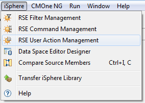
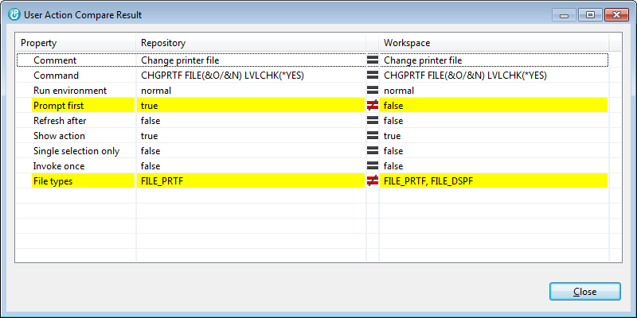

With iSphere RSE User Action Management you can export some or all user actions from your workspace to a repository. A repository is an XML file on your local PC or a network drive. You can then import some or all user actions from a repository to your workspace. The repository can act as a backup for your user actions.
Here are some other scenarios where you might find User Action Management useful:
To open the iSphere RSE User Action Management dialog, open the iSphere menu click on the Sun icon labeled with RSE User Action Management.

You now need to specify what you want to manage, and also the repository name:
The user actions in the workspace and in the repository will be displayed in up to four separate horizontal panes.
The next two option, Edit only workspace user actions and Edit only repository user actions are suitable for removing commands from the workspace or the repository.
If this is unchecked, then all user actions will be considered for action.
The editing area for resources that are in the repository and the workspace but with different parameters is a little different from the one used in the filter manager, because user actions have a lot of attributes that can be different. In order to see all differences between a repository and a workspace user action, you can open a compare dialog by double-clicking the user action entry.

Alternatively you can open the compare dialog from the context menu of the user action entry.

 | - | IBM supplied user action |
| - | User defined user action |
| Attribute | Comments | |
|---|---|---|
| Comment | - | Specifies the comment of the user action. |
| Command | - | Specifies the command. |
| Run environment | - | Specifies the run environment of the command. |
| Prompt first | - | Specifies whether the command is prompted when the user action is invoked. |
| Refresh after | - | Specifies whether the selected resource is refreshed after the user action is invoked. |
| Show action | - | Specifies whether to show the user action when it applies. |
| Single selection | - | Specifies whether to show the user action only if a single object is selected. |
| Invoke once | - | Specifies whether the user action is invoked once for all selected objects. |
| File types | - | Specifies the file types the user action is assigned to. |
| Attribute | Comments | |
|---|---|---|
| Label | - | Specifies the name of the user action. |
| Comment | - | Specifies the comment of the user action. |
| Command | - | Specifies the command. |
| Run environment | - | Specifies the run environment of the command. |
| Prompt first | - | Specifies whether the command is prompted when the user action is invoked. |
| Refresh after | - | Specifies whether the selected resource is refreshed after the user action is invoked. |
| Show action | - | Specifies whether to show the user action when it applies. |
| Single selection | - | Specifies whether to show the user action only if a single object is selected. |
| Invoke once | - | Specifies whether the user action is invoked once for all selected objects. |
| File types | - | Specifies the file types the user action is assigned to. |
| Order | - | Order of the user action. Specifies the order of the user action, when selecting option 'User actions' from the context menu of a source member. |
| Vendor | - | Specifies the vendor of the user action. May not be used at all. |
Not all beforehand mentioned properties can be maintained on the GUI.
| Attribute | Comments | |
|---|---|---|
| Label | - | Not updated, because it is the identifying property. |
| Comment | - | Always updated. |
| Command | - | Always updated. |
| Run environment | - | Always updated. |
| Prompt first | - | Always updated. |
| Refresh after | - | Always updated. |
| Show action | - | Always updated. |
| Single selection | - | Always updated. |
| Invoke once | - | Always updated. |
| File types | - | Always updated. |
| Order | - | Always updated. |
| Vendor | - | Not changed on updates. |